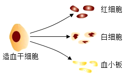

2024年北京市西城区中考生物真题 · 选择题 第1、2、3、4、5题
1. 国槐是北京市的市树，其结构和功能的基本单位是（ ）
A. 细胞B. 组织C. 器官D. 系统
2. 制作人体口腔上皮细胞临时装片时，将载玻片擦拭干净，随后滴加（ ）
A. 清水B. 碘液C. 酒精D. 生理盐水
3. 图所示为人的造血干细胞产生不同类型血细胞的过程，这一过程称为（ ）

A. 细胞分裂B. 细胞分化
C. 细胞生长D. 细胞死亡
4. 在植物根尖的结构中，吸收水分和无机盐的主要部位是（ ）
A. 根冠B. 分生区
C. 伸长区D. 成熟区
5. 番茄是生活中常见的果蔬，其花中能够发育形成果实的结构是（ ）
A. 柱头B. 雄蕊C. 胚珠D. 子房